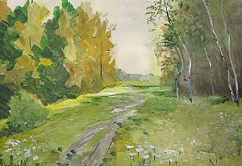
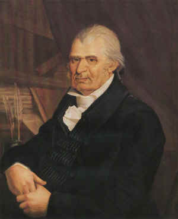

|
La Conquête est la première révolution qu'ont connu les Canadiens, leur vie fut bouleversée, souvent à leur avantage. Une génération s'écoule: survient alors une deuxième révolution, celle de 1791. Après la guerre d'Indépendance américaine, ce sont les échos de la Révolution française de 1789 qui retentissent ici. L'autorité coloniale britannique accueille favorablement une révolution qui vient un siècle après celle que l'Angleterre a connue en 1688. Appuyée par l'Église catholique et Mgr Plessis, la position britannique change avec la Terreur de 1793 : la décapitation de Louis XVI suscite un puissant courant contre-révolutionnaire dans la colonie. Indépendance américaine et Révolution française incitent Londres, en 1791, à octroyer à sa colonie une Constitution où le pouvoir monarchique et aristocratique, incarné par le Gouverneur et les Conseils Exécutif et Législatif, est tempéré par une représentation démocratique.
En 1791 Londres en a assez des récriminations des Loyalistes qui jouent aux martyrs. C'est vrai que les Américains les ont chassés odieusement. Mais, jusque là, la loyauté des Loyalistes a coûté plus de 15 000 000 de livres au Trésor britannique. "On leur a fourni des semences, des bestiaux, des instruments agricoles, précise un rapport du Gouvernement à Londres. À tout chef de famille, on a concédé 100 acres et 50 acres pour chaque personne de sa famille, etc... Et ils se plaignent toujours, conclut l'auteur du rapport. Ils sont tout au plus 7 000 à être plus anglais que les Anglais sur le territoire du Québec, raille-t-il, visiblement excédé par les Loyalistes, et ils voudraient maintenant que leurs concessions, de Pointe Beaudet en allant vers l'ouest forment un district distinct de la Province of Quebec."
L'ACTE CONSTITUTIONNEL, LA
DEUXIÈME
La partie bas-canadienne présente en 1791
un quadrillage nouveau, qui se superpose sur les seigneuries et sur les
concessions en franc et commun socage: les comtés. La vie parlementaire, l'essor de l'imprimerie et la parution de journaux comme la Gazette de Québec, le Quebec Mercury et le Canadien favorisent la naissance d'une opinion publique et suscitent des débats. Joseph Quesnel témoigne de cette époque en faisant jouer l'Anglomanie en 1807. Louis Dulongpré en rit sous forme de caricatures.
 La démocratie
parlementaire s'accompagne de la montée d'une bourgeoisie
francophone exerçant des professions libérales et qui, par
familiarité professionnelle ou politique ou par alliances
familiales, se donne de nouvelles formes de sociabilité.
Les collèges se multiplient. À la traite des fourrures, fondement de
l'économie depuis deux siècles, succède l'industrie du bois: ce qui
met fin au rôle essentiel de l'Amérindien dans le grand
commerce. PREMIÈRES ÉLECTIONS, PREMIERS DÉBATS Voté par les Communes, accepté sans grande discussion par la Chambre des Lords, sanctionné par le Roi, l'Acte constitutionnel est entré en vigueur le 26 décembre. À Montréal, l'évènement est passé inaperçu. Le pain coûtait trop cher pour organiser un banquet. À Québec, ce fut l'occasion de fêtes mémorables, et de nombreux toasts portés du Roi au duc de Kent, en passant par la Révolution française et la liberté, l'argent et la santé. Vive la Nouvelle Constitution....
Une fois élu, le 20 juin, Panet s'avère un maître publiciste. Après avoir remercié ses électeurs, il annonce qu'il se propose de distribuer 100 louis d'or aux pauvres. Et il tient parole. Alors que ses confrères en sont encore à se féliciter d'avoir été élus, Panet investit déjà sur sa prochaine campagne électorale. Sur les 50 députés élus, 16 sont de langue anglaise. Sur les 6 députés auxquels ont droit la ville et le comté de Montréal, 4 sont anglais, Joseph Frobisher, James McGill (qui a épousé une Canadienne française), John Richardson, James Walker, et 2 canadiens, Jean-Baptiste Durocher et Joseph Papineau. Frobisher, McGill, Richardson et Durocher, c'est le Beaver Club, le lobby de la fourrure. Walker a été l'un des combattants du fort Saint-Jean en 1775 lors de l'invasion américaine et Joseph Papineau est notaire et arpenteur, c'est lui qui a tracé le cadastre de la plupart des concessions autour de Montréal. Pour ceux qui s'inquiètent que 4 Anglais représentent une majorité canadienne, La Gazette de Montréal se fait rassurante en précisant dans un article que "ces Messieurs ne prendront pas en considération la distinction mal fondée entre Anglais et Français que font certaines personnes préjugées, mais ne seront guidés que par des motifs patriotiques, pour le service du bien public et l'avantage du pays."
 Après 1793, le Bas-Canada s'installe confortablement dans les querelles parlementaires et partisanes. Tout devient rapidement sujet à controverses entre le French et le British Party. Ce fut tout d'abord la question des lois fiscales et financières de 1793 et 1795 qui prévoyaient la taxation des entreprises commerciales mais non de la propriété foncière; puis vint la tentative de J. Mountain, évêque anglican de Québec, d'établir un réseau d'écoles gratuites afin d'angliciser et de convertir le plus rapidement possible les Canadiens. En 1805 le conflit éclata de nouveau, cette fois au sujet du financement des prisons. D'un côté les Canadiens, hostiles à l'impôt foncier, et qui suggéraient plutôt de taxer l'activité commerciale qu'ils considéraient comme un luxe de parasites. De l'autre le British Party qui soutenait que les immenses propriétés foncières des seigneurs canadiens ne contribuaient en rien au bien-être général de la colonie et qu'elles devraient donc être taxées en conséquence. En dotant le Haut-Canada d'une identité distincte et d'une constitution provinciale, et en y favorisant la colonisation britannique, l'Angleterre franchit la première étape sur la voie qui mènera finalement à la Confédération canadienne. Malgré cela, de nombreux historiens considèrent que le fait que cette loi n'établisse pas un gouvernement responsable et qu'elle répartisse les pouvoirs financiers de façon à favoriser les conseils non élus contribue aux conflits politiques du début du 19ème siècle. 
|
 Les
loyalistes, arrivés depuis peu au
pays, occupent plusieurs postes importants dans la société et veulent
faire la loi, soit par excès de patriotisme (n'ont-ils pas tout quitter
pour rester fidèles à l'Angleterre?) ou par vengeance (certains se
rappellent la "petite guerre", ces raids que les
Français faisaient avec leurs alliés Amérindiens en
Nouvelle-Angleterre).
Les
loyalistes, arrivés depuis peu au
pays, occupent plusieurs postes importants dans la société et veulent
faire la loi, soit par excès de patriotisme (n'ont-ils pas tout quitter
pour rester fidèles à l'Angleterre?) ou par vengeance (certains se
rappellent la "petite guerre", ces raids que les
Français faisaient avec leurs alliés Amérindiens en
Nouvelle-Angleterre).  En mars,
William Pitt fils, premier ministre d'Angleterre, dépose
un projet de Constitution aux Communes qui tient compte des usages et
idées des Canadiens et des Loyalistes. En bref, deux provinces, le
Haut et le Bas-Canada; pour chacune d'elles, un Conseil législatif
nommé et une Assemblée élue de 50 membres pour le Bas-Canada. La
réaction de l'opposition était prévisible: "Essayer d'avoir
deux peuples ayant des langues, des lois, des mœurs différentes, c'est absurde.
One country, one language. On veut par là séparer les habitants
anglais des habitants français. Ne vaudrait-il pas mieux travailler à unir
les 2 races en un seul tout..." Pitt est pragmatique et
leur répond: "Il serait extrêmement désirable que les
habitants du Canada fussent unis ... mais, dans les circonstances
actuelles, la division de la province est probablement le meilleur moyen
d'y parvenir. Les sujets français se convaincront ainsi que le
gouvernement britannique n'a aucune intention de leur imposer les lois
anglaises... Ainsi, avec le temps, ils adopteront peut-être nos
lois par conviction. Ce sera l'expérience qui devra leur enseigner que
les lois anglaises sont les meilleurs. Mais ce qu'il faut admettre c'est
qu'ils doivent être gouvernés à leur satisfaction."
En mars,
William Pitt fils, premier ministre d'Angleterre, dépose
un projet de Constitution aux Communes qui tient compte des usages et
idées des Canadiens et des Loyalistes. En bref, deux provinces, le
Haut et le Bas-Canada; pour chacune d'elles, un Conseil législatif
nommé et une Assemblée élue de 50 membres pour le Bas-Canada. La
réaction de l'opposition était prévisible: "Essayer d'avoir
deux peuples ayant des langues, des lois, des mœurs différentes, c'est absurde.
One country, one language. On veut par là séparer les habitants
anglais des habitants français. Ne vaudrait-il pas mieux travailler à unir
les 2 races en un seul tout..." Pitt est pragmatique et
leur répond: "Il serait extrêmement désirable que les
habitants du Canada fussent unis ... mais, dans les circonstances
actuelles, la division de la province est probablement le meilleur moyen
d'y parvenir. Les sujets français se convaincront ainsi que le
gouvernement britannique n'a aucune intention de leur imposer les lois
anglaises... Ainsi, avec le temps, ils adopteront peut-être nos
lois par conviction. Ce sera l'expérience qui devra leur enseigner que
les lois anglaises sont les meilleurs. Mais ce qu'il faut admettre c'est
qu'ils doivent être gouvernés à leur satisfaction." En
1791,
l'Acte constitutionnel divise donc le Canada en deux : le
Haut-Canada, majoritairement
peuplé de loyalistes anglophones et le Bas-Canada,
peuplé des Canadiens français. Les limites
territoriales du Haut-Canada correspondaient au sud de l'Ontario
actuel, et celles du Bas-Canada au sud du Québec
actuel.
En
1791,
l'Acte constitutionnel divise donc le Canada en deux : le
Haut-Canada, majoritairement
peuplé de loyalistes anglophones et le Bas-Canada,
peuplé des Canadiens français. Les limites
territoriales du Haut-Canada correspondaient au sud de l'Ontario
actuel, et celles du Bas-Canada au sud du Québec
actuel.  L'intérieur
domestique bourgeois favorise des activités comme l'aquarelle et le dessin,
la lecture et
le jeu de cartes, ou la tenue de
« salons » comme celui d'Amélie Panet Berczy, qui
finissent par déborder du cadre de la vie familiale.
L'intérieur
domestique bourgeois favorise des activités comme l'aquarelle et le dessin,
la lecture et
le jeu de cartes, ou la tenue de
« salons » comme celui d'Amélie Panet Berczy, qui
finissent par déborder du cadre de la vie familiale.
 La première intervention de
James McGill en chambre est de contester
la candidature de Jean-Antoine Panet au poste de président d'Assemblée
en lui opposant celle de William Grant. Selon McGill, une parfaite
connaissance des langues française et anglaise étant une qualité
essentielle de l'Orateur et l'incapacité de Monsieur Panet à cet
égard étant bien connue, il tombe sous le sens qu'on choisisse un
parfait bilingue comme Monsieur Grant. La première intervention de John
Richardson est de souligner que les "transactions entre
l'Orateur et le représentant du Roi, le Gouverneur, doivent être dans
la langue de l'Empire auquel nous avons le bonheur d'appartenir, quelle
que fut la langue dans laquelle se sont faits les débats dans la
Chambre". Dans sa première intervention, Joseph Papineau
convient que nous avons sans doute le bonheur de composer une branche de
l'empire britannique mais "qu'on ne peut pas supposer qu'aucun
Canadien doive être privé de ses droits parce qu'il n'entend pas
l'anglais."
La première intervention de
James McGill en chambre est de contester
la candidature de Jean-Antoine Panet au poste de président d'Assemblée
en lui opposant celle de William Grant. Selon McGill, une parfaite
connaissance des langues française et anglaise étant une qualité
essentielle de l'Orateur et l'incapacité de Monsieur Panet à cet
égard étant bien connue, il tombe sous le sens qu'on choisisse un
parfait bilingue comme Monsieur Grant. La première intervention de John
Richardson est de souligner que les "transactions entre
l'Orateur et le représentant du Roi, le Gouverneur, doivent être dans
la langue de l'Empire auquel nous avons le bonheur d'appartenir, quelle
que fut la langue dans laquelle se sont faits les débats dans la
Chambre". Dans sa première intervention, Joseph Papineau
convient que nous avons sans doute le bonheur de composer une branche de
l'empire britannique mais "qu'on ne peut pas supposer qu'aucun
Canadien doive être privé de ses droits parce qu'il n'entend pas
l'anglais."